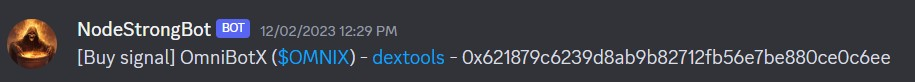
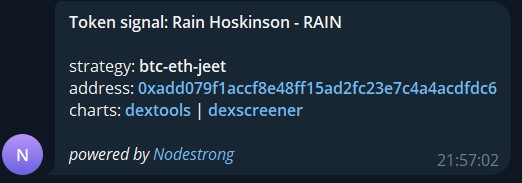

The backtester contains detailed information on how well a trading strategy would have performed in the past
Nodestrong is a crypto defi analytics and trading strategy platform with which it is possible to create and backtest trading strategies. The trading strategy is formed by combining on-chain conditions into a sequence of "if then else" statements, forming the algorithm that defines when a token should be bought. There is a library of around 25 different conditions, and the user drag/drops them in a web-based editor to form a complete strategy.
Example of a simple trading strategy.
The platform provides a backtester that runs the trading strategy on historical data. Once the backtest has completed, there is detailed information to know which tokens would have triggered, what was the entry value and what was the max value after the trigger. Data such as number of swaps and liquidity is visible at a block granularity. Charts with the trigger point highlighted, and actual vs expected values in all the trading strategy conditions are visualisation helps to understand what happened throughout the backtest.
The backtester contains detailed information on how well a trading strategy would have performed in the past
Each trading strategy is executed live at the head of the chain, on all the newly launched tokens and on each block. The live view gives an overview of all the newest launches on Uniswap V2, and provides real time token data updates similar to other livepairs platforms. In the live view you can see which tokens have been triggered according to the active trading strategy.
The live view ordered on the most recent launches.
In order to get access to the tool, a user will have to join a community that has integrated the Nodestrong Discord or Telegram bot. The signals are received in the form of text messages inside the messaging app. Each signal contains basic information such as token name, contract addressa and links to charts. The user will then have to act on the signal and execute a buy if he/she so wishes. Integration with an external trade execution platform is a possibility but not foreseen as a native feature of Nodestrong.
With the nature of crypto trading being "pvp" (player vs player), it can be of interest to keep a trading strategy algorithm restricted. As a user there are many variations on how restricted signals and trading strategies can be on the platform. The signals can be:
|

|

|
| Discord signal | Telegram signal |
The core ideas behind Nodestrong are:
In this product offering, Nodestrong provides the end-to-end front and backend solution towards a community and their members. In pratise it means that users goes through a Telegram or Discord channel in order to get access to the Nodestrong web-application and authentication happens towards the messaging app account. The web-app contains all the capabilities outlined above, from the strategy editor to the backtester and token live view. The community owners have the ability to control who has access to the app and which user type and capabilities each member has access to. It's up to the community owners to shape how they use this platform. From it's most simple form where members simply get access to signals, to a combination where some members have access to their own personal trading strategies, and some other only have access to the shared signals. The flexibility of the Nodestrong platform allows the community owners to decide the way the use it.
The tech behind Nodestrong can be provided as a service to other frontends, who prefer to have their own custom look & feel and capabilities. A frontend in this case can for example be a Telegram bot a mobile app or a website. Nodestrong would in this case be a provider of signals to that frontend, and the project creators would use our tools to build and backtest their own trading strategies. For instance projects that provides a Telegram bot that sends token signals in a public or private channel, could be using Nodestrong behind the scenes, without it being visible to the end user.